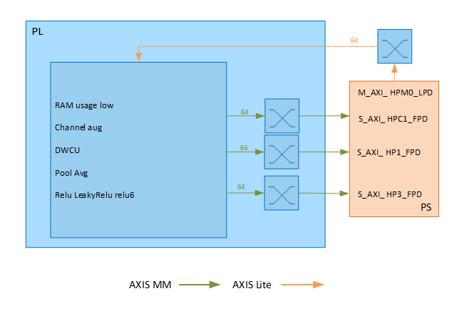

Kria™ K260 SOM Starter Kit NLP SmartVision Tutorial |
Hardware Architecture of the Accelerator |
Hardware Architecture of the Accelerator¶
Preprocessing IPs and DPU¶
The Vitis™ software platform overlay includes DPU, as shown in the following figure.

The DPU IP can be configured, and for this design, the following features should be enabled:
Channel augmentation
Depth-wise convolution
Average pooling
Relu, LeakyRelu and Relu6
UltraRAM enable
To learn more about the DPU, refer the DPUCZDX8G for Zynq UltraScale+ MPSoCs Product Guide (PG338).
As shown in the following table, the DPU is integrated in the nlp_smartvision platform. The utilization is analyzed, and some optimizations of the whole hardware design is done.
| Resource Usage of Current Design (Estimated) |
|---|
| LUTs | BRAM | DSP | URAM | |
|---|---|---|---|---|
| K26 Resource | 117120 | 144 | 1248 | 64 |
| Platform(4K) | 14410 | 43.5 | 47 | 1 |
| DPU B3136 | 43366 | 67 | 548 | 44 |
| Total used | 44% | 76.7% | 47.6% | 70.3% |
As shown in the following table, the DPU performance and overall power on the K26 chip (including all the other IPs) is estimated. The DPU is assumed to run at 300 MHz.
| DPU Performance and Power (Estimated) |
|---|
| TOPS (Peak) | TOPS (DenseBox)1 | Power (Overall)2 | |
|---|---|---|---|
| B3136 | 0.92 | 0.25 | 7.9W |
NOTE:
The DenseBox_640x360 model is used to estimate the real performance of DPU, and this model has 1.1GO Ps.
The overall power of K26 (including DPU and other IPs) is only estimated.
This is shown in Table 3, DPU B3136 Bandwidth Requirements.
| Table 3 – DPU B3136 Bandwidth Requirements |
|---|
| Operation | Peak | Average |
|---|---|---|
| Write (MB/s) | 1300 | 440 |
| Read (MB/s) | 6200 | 2600 |